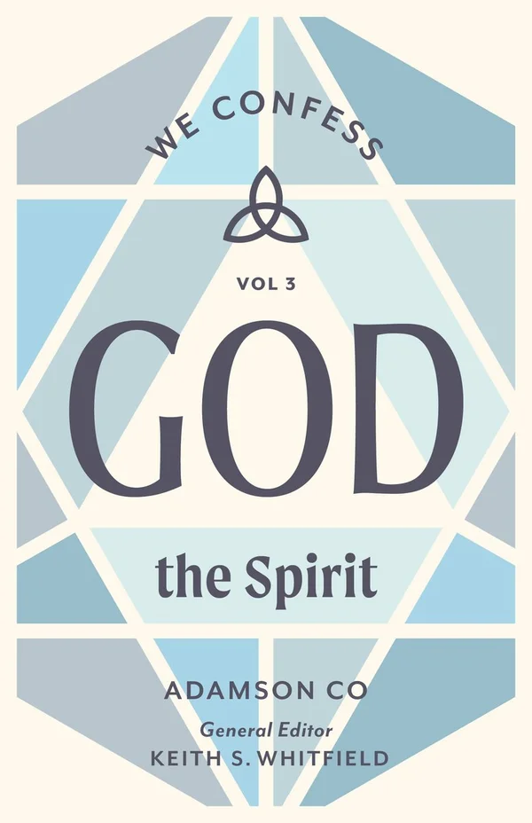

God the Spirit
Adamson Co
The final volume of the We Confess series takes up the person and work of the Holy Spirit, from new birth and union with Christ to the church's life, its mission and the renewal of all things. Co, who teaches at California Baptist University, writes compact, confessionally grounded pneumatology for church members rather than specialists.
February 16, 2027B&H Publishing